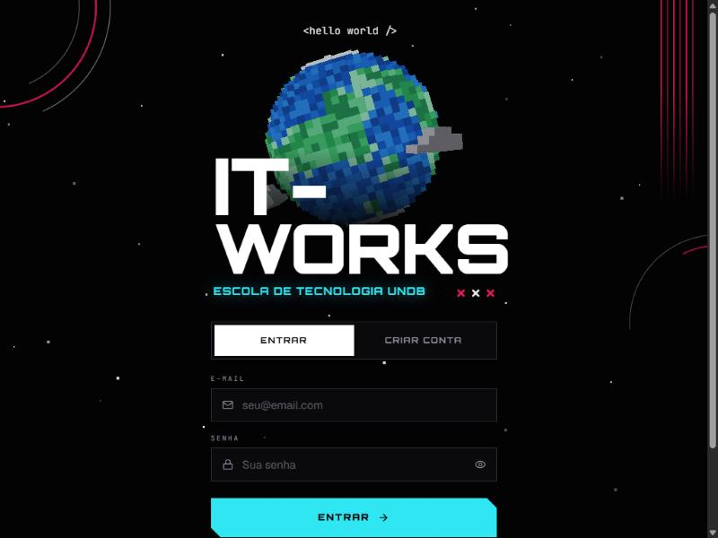

Event gamification LIVE · SEP 30 – OCT 2
IT-WORKS · QR Hunt
A game that turns a three-day tech event into a hunt.
Built for IT-WORKS, the technology event at Escola de Tecnologia UNDB. Attendees create an account, sign in and play a QR-code hunt across the event — a gamified layer that gives people a reason to explore every corner of it.